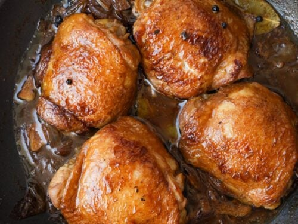

Chicken Adobo

Description
A traditional Filipino chicken dish.
Ingredients
- 3 tablespoons vegetable oil
- 3 pounds boneless, skinless chicken thighs, rinsed and patted dry
- ½ cup soy sauce
- ½ cup apple cider vinegar
- ½ cup water
- 2 tablespoons pickling spice, wrapped in cheesecloth
Steps
-
Heat oil in a large pot over medium heat until oil is shimmering.
Cook garlic in oil for no more than 30 seconds.
Add all of the chicken to the pot; cook, stirring frequently, until chicken is white all over. Do not brown.
-
Pour in soy sauce, vinegar, and water, and add the pickling spice.
Make sure the spice ball is submerged. Bring to a boil, reduce heat to simmer,
and place lid on pot so that some steam can escape. Simmer for 1 hour, or until chicken is very tender.